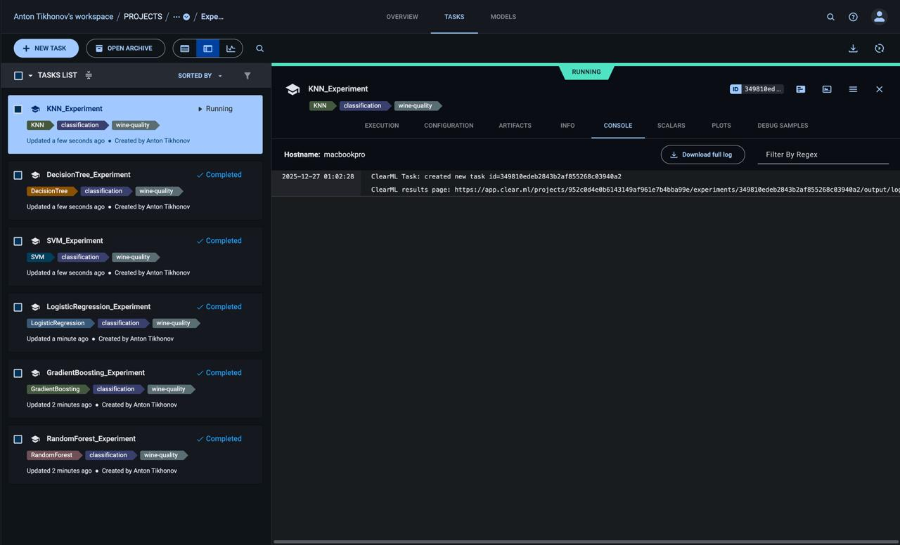
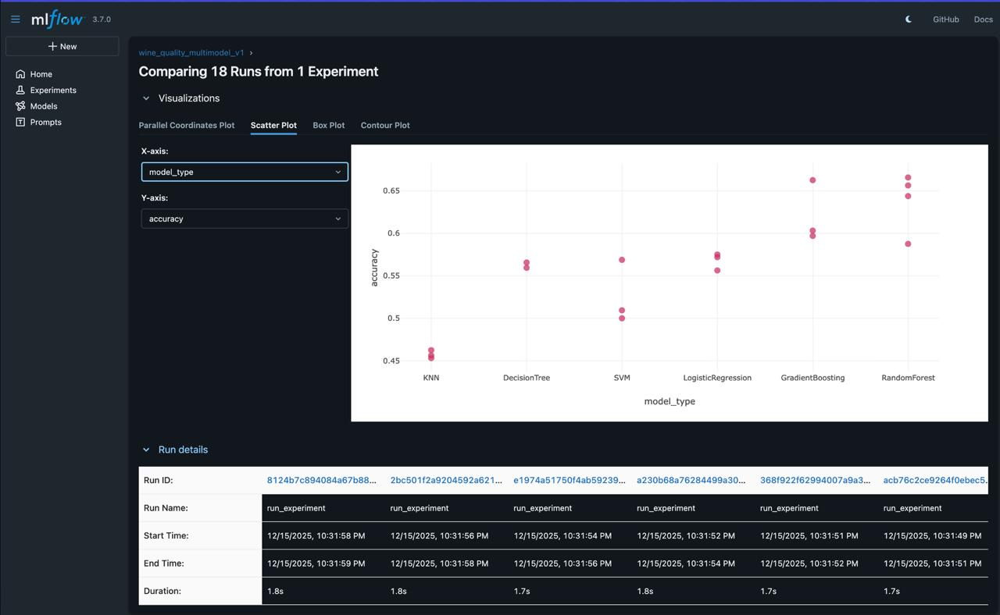

EPML ITMO - Wine Quality Classification¶
Добро пожаловать в документацию проекта Wine Quality Classification - системы машинного обучения для классификации качества вина.
🎯 О проекте¶
Проект демонстрирует полный MLOps workflow на примере задачи классификации качества красного вина с использованием:
- DVC - версионирование данных и пайплайнов
- Hydra - управление конфигурациями
- MLflow - трекинг экспериментов
- ClearML - MLOps платформа
- MkDocs - документация
🚀 Быстрый старт¶
# Клонирование репозитория
git clone https://github.com/username/epml_itmo.git
cd epml_itmo
# Установка зависимостей
poetry install
# Активация окружения
poetry shell
# Запуск экспериментов
make clearml_experiments_all
📊 Используемые модели¶
| Модель | Описание |
|---|---|
| Random Forest | Ансамбль деревьев решений |
| Gradient Boosting | Градиентный бустинг |
| Logistic Regression | Логистическая регрессия |
| SVM | Метод опорных векторов |
| Decision Tree | Дерево решений |
| KNN | K ближайших соседей |
📈 Визуализация результатов¶
ClearML эксперименты¶

Трекинг экспериментов в ClearML Web UIMLflow сравнение¶

Сравнение моделей по accuracy в MLflow📁 Структура проекта¶
epml_itmo/
├── conf/ # Конфигурации Hydra
├── data/ # Данные (raw, processed)
├── docs/ # Документация MkDocs
├── src/ # Исходный код
│ ├── data/ # Подготовка данных
│ ├── models/ # Обучение моделей
│ ├── pipelines/ # ML пайплайны
│ └── clearml_integration/ # ClearML интеграция
├── outputs/ # Результаты экспериментов
├── Makefile # Команды автоматизации
└── pyproject.toml # Зависимости проекта
📚 Разделы документации¶
-
:material-download:{ .lg .middle } Начало работы
Установка, настройка и первые шаги
-
:material-book-open-variant:{ .lg .middle } Руководства
Подробные инструкции по использованию
-
:material-api:{ .lg .middle } API Reference
Документация по модулям и функциям
-
:material-chart-bar:{ .lg .middle } Отчёты
Результаты экспериментов и сравнение моделей